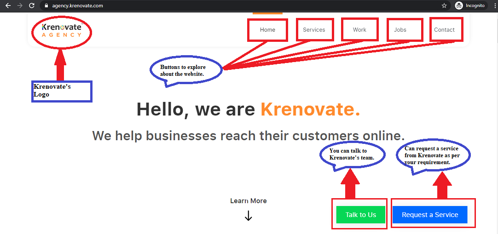
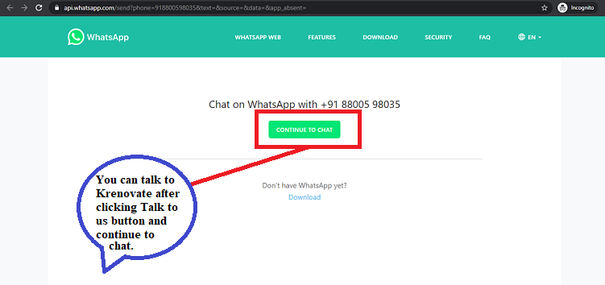
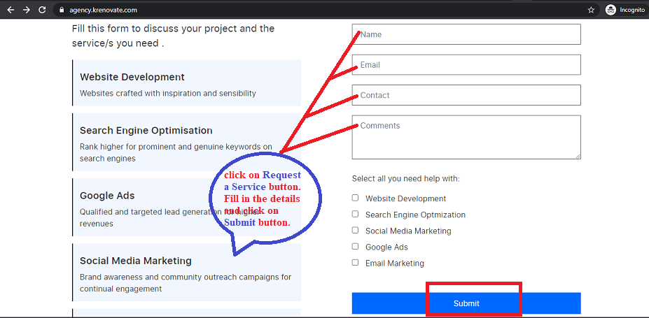

User Experience(UX) and User Interface(UI)¶
There are two aspects to design a great website.
1. UX
2. UI
UX¶
What is UX Design?¶
-
It is the process of designing products that are useful, easy to use, and delightful to interact with. It is about enhancing the experience that people have while interacting with your product, and making sure they find value in what you are providing.
-
There are seven factors that describe user experience:
-
Useful
-
Usable
-
Findable
-
Credible
-
Desirable
-
Accessible
-
Valuable
-
The key ingredients for a great user experience on a website include the following in the image given below:

Why Design is important¶
-
Without designing, you may waste your time and money. When you are creating a website, it is important to have a design rather a good design for a better outcome.
-
It actually makes a difference on how your target audience views your business or company and potentially turn them into your customers.
-
The design of the application improves the user experience and customer satisfaction that ultimately helps increase the number of users of the specific application. It helps to win the consumers confidence and make them use your application or website providing them what they are looking for.
UX Designer Roles and Responsibilities¶
-
UX designers take the lead role in improving the end user's requirements and try to produce a product that make users happy.
-
The role of a UX designer will be directly involved in the process of making a product useful, usable and enjoyable for the company’s target market.
The process generally works in this order:
-
User Research :
-
It involves speaking to real users within the target market about the product, therefore avoiding assumptions and instead making information-driven decisions.
-
UX designers will ask questions about how people feel when they are navigating a current design, and whether the user interface components are easy or difficult to interact with.
-
Questionnaires, focus group discussions, online surveys, and task analysis methods can be used for this.
-
The collected data is deeply analyzed and eventually converted into quantitative and qualitative information which is used for decision making.
-
-
Design :
- It is centred around functionality and usability, and not about how it looks. Information architecture, wireframing, and prototyping techniques to design the user's journey are used during this phase.
-
Testing :
-
It involves checking that the changes made during the design phase stand up to scrutiny. It is a great way to get rid of issues/user difficulties that weren't visible in the design phase before getting started on the implementation phase.
-
There are various testing methods such as a/b testing, usability testing, and remote user testing.
-
-
Implementation :
-
It involves working with web developers to reach the end goal. They work to transform design ideas into a real, working website.
-
It is important to keep the developers in the loop throughout the process so as to make this final phase easier for everyone involved.
-
Wireframe¶
-
It is a visual representation of an interface using only simple shapes and they look like they were designed with wires and that is where the name comes from.
-
It is a low-fidelity design layout that outlines the specific size, placement of page elements, site features, conversion areas and navigation for your website.
-
They are devoid of color, font choices, logos or any real design elements that take away from purely focusing on a site's structure.
-
It is used early in the development process to establish the basic structure of a page before visual design and content is added.
-
It is the foundation to the User Interface (UI) you will be designing later on.
Low fidelity and high fidelity design¶
Reminder:to be addded¶
UI¶
What is UI Design?¶
-
It is the process designers use to build interfaces in software/computerized devices, focusing on looks/style.
-
User interface (UI) is the space where interactions between humans and machines occur. These are the access points where users interact with designs. It has three formats:
-
Graphical user interfaces (GUIs)
-
Voice-controlled interfaces (VUIs)
-
Gesture-based interfaces
UI Designer Roles and Responsibilities¶
-
It is the UI designer’s job to bring the UX designer’s vision to life.
-
A UI designer is responsible for creating interactive programs that enhance a customer's experience with a brand and facilitate an enjoyable experience on the website.
-
They are also responsible for ensuring consistency, so creating a style guide, or visual language to be used across the board.
-
Generally they follow the following steps:
-
Collaboration :
-
At the start of the process, the UI designer needs to work closely with both UX designer and client/users.
-
They can clearly know about the requirements of the user/client.
-
As user research and personas are the responsibility of a UX designer but it is the UI designer's job to take this information and run with it as a UX designer will most likely provide you with a wireframe.
-
Now you can hand the design over to the developers as building a rapport and better communication are crucial for the success of your project.
-
-
Design :
-
It includes designing screens and creating visual touch points, as well as the interactivity behind them.
-
While designing they will consider the following points:
-
How much space should be left between each element?
-
How the app will display on various screen sizes?
-
Designing UI elements such as buttons, icons, sliders and scrollbars
-
Color theory to create an awesome, unique color palette that injects some personality into the website or app.
-
Choosing the correct fonts and typesetting.
-
What does a button do when the user clicks on it?
-
Creating animations.
-
Establishing a style guide to be used throughout the application, ensuring consistency and familiarity for the user.
-
-
Prototyping
-
It enables you to showcase your visual designs in action, helping you to quickly identify flaws and smooth over any rough edges.
-
Prototyping and testing is a crucial part of the UI design workflow, as it will allow you to ensure that the final product ticks all the boxes.
-
There are three different types of prototypes:
- Low fidelity wireframes
- Clickable prototypes
- High fidelity prototypes
-
How UI Design looks like¶



Difference between UX and UI¶
To be addded
How do UX and UI design work together¶
To be added
https://careerfoundry.com/en/blog/ui-design/what-does-a-ui-designer-actually-do/